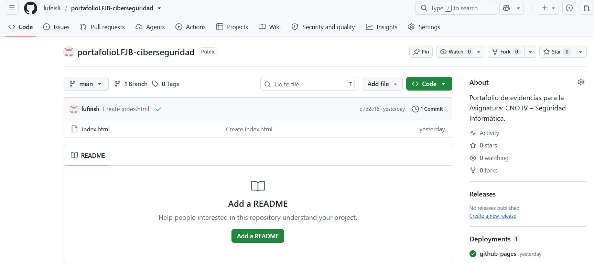
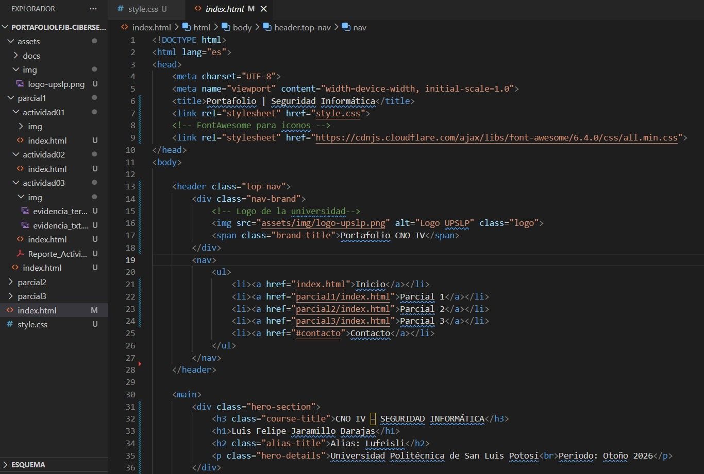

Desarrollo de la Práctica
Repositorio y Hosting
Se inicializó un repositorio público en GitHub configurando GitHub Pages en la rama main, lo que generó automáticamente el certificado SSL (HTTPS).
Estructura y Estilos
Se desarrolló una interfaz basada en Grid y Flexbox utilizando CSS puro, implementando una paleta de colores oscura acorde a la ciberseguridad.
Evidencias del Proceso

Fig 1: Configuración del Repositorio

Fig 2: Estructura HTML y CSS
Conclusión
La creación de este portafolio no solo cumple con un requisito académico, sino que representa el establecimiento de una identidad digital profesional. Comprender el flujo de trabajo con Git, el despliegue de sitios estáticos en GitHub Pages y la correcta estructuración de información (UI/UX) son habilidades fundamentales para documentar y presentar futuros hallazgos en auditorías de seguridad y pruebas de penetración.